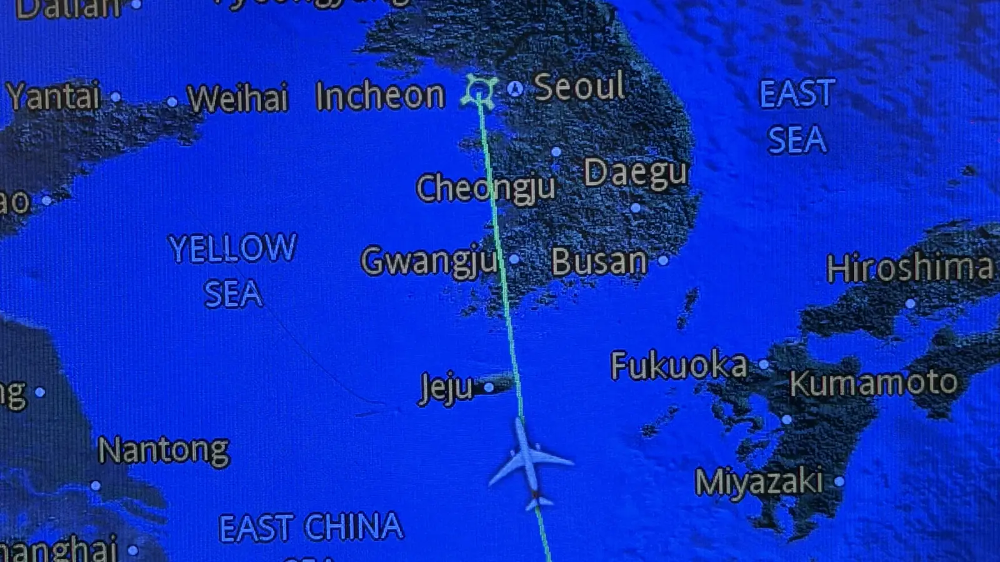

Twee digitale oplossingen om klanten vast te houden
De richting is verdedigen. Meer directe aansluitingen maken en groeien via bestaande klanten doet Wise al. Op twee punten heeft Wise nog geen antwoord: stablecoins (digitale munten met een vaste waarde, zoals 1 dollar) en klanten die Wise maar af en toe gebruiken.
Eigen foto: vluchtroute op het scherm in een vliegtuig, augustus 2026
Waarom juist deze twee?
De SWOT-analyse en de confrontatiematrix in het rapport laten zien welke combinaties het zwaarst wegen. Twee daarvan zijn nog niet opgelost:
Geen stablecoins × stablecoins groeien
Western Union, PayPal en Remitly hebben al een product met stablecoins. Wise volgt de ontwikkeling alleen. In landen waar Wise geen directe aansluiting op het betaalsysteem heeft, kan een stablecoin goedkoper of sneller worden.
Eén product × overstappen kost niets
De helft van de omzet komt uit overboekingen (zie grafiek 1). Een klant die Wise alleen daarvoor gebruikt, is zo weg. Van de 18,9 miljoen klanten die in boekjaar 2026 actief waren, waren er in het laatste kwartaal 11,3 miljoen actief.
Stablecoins als extra route
Wise voegt stablecoins toe als extra route in zijn eigen netwerk. Per overboeking kiest het systeem automatisch de goedkoopste en snelste route. De klant merkt er niets van: die verstuurt gewoon euro's, en de ontvanger krijgt zijn eigen valuta.
Zo werkt het, in vier stappen
Een stablecoin is digitaal geld met een vaste waarde. Eén USDC is bedoeld om altijd één dollar waard te zijn, één EURC één euro. Het geld zelf verandert dus niet, alleen de weg die het aflegt. Vergelijk het met een pakketje: nu gaat het vaak via een rij postkantoren (banken) in verschillende landen. Met een stablecoin brengt één koerier het rechtstreeks.
-
Jij verstuurt euro's
In de app van Wise, precies zoals nu. Je ziet geen verschil.
-
Wise wisselt om
Wise zet je euro's om in een stablecoin die onder toezicht staat, bijvoorbeeld een digitale dollar.
-
Het geld reist digitaal
De stablecoin gaat rechtstreeks naar een partner van Wise in het land van de ontvanger, zonder tussenbanken.
-
De ontvanger krijgt lokaal geld
De partner wisselt de stablecoin om naar de valuta van dat land en zet het op de rekening van de ontvanger.
Wise kiest per overboeking. Het systeem vergelijkt deze route met de gewone route via banken en kiest de goedkoopste of snelste. Is de stablecoin-route ergens niet beter, dan gaat het geld gewoon de oude weg. Op de kaart bij Achtergrond is dit de gestreepte lijn.
- USD 513,6 mln transactiekosten in boekjaar 2026, ongeveer een vijfde van de omzet Bron: Wise Group plc (2026a)
- ≈ USD 5 mln per jaar bespaard voor elke procent lagere transactiekosten Eigen berekening: 1% van USD 513,6 mln
Doel en eerste stappen
- Kies de vijf landen zonder directe aansluiting waar de kosten via partners het hoogst zijn.
- Zoek een partner die stablecoins uitgeeft en omwisselt, en vraag een vergunning voor cryptodiensten aan.
- Start uiterlijk eind 2027 een proef waarin beide routes naast elkaar worden gemeten.
- Doel voor eind 2029: de transactiekosten per overboeking in die landen zijn minstens 10% lager.
Grootste risico
De route is niet goedkoper. Volgens de BIS vallen de kosten van stablecoins in de praktijk nog wisselend uit. Daarom gebruikt Wise alleen stablecoins onder toezicht, en kiest het systeem deze route alleen als die echt goedkoper of sneller is. Klopt dat niet, dan verliest Wise alleen de kosten van de proef.
Persoonlijk overzicht in de app
Wise bouwt in de app een persoonlijk overzicht dat laat zien wat de klant bespaart en wat de rekening nog meer kan doen: salaris ontvangen, betalen met de kaart of geld laten staan. Wie Wise voor meer gebruikt dan alleen overboeken, stapt minder snel over.
- ≈ 60% van de klanten is per kwartaal actief (11,3 van 18,9 miljoen) Bron: Wise Group plc (2026a; 2026b)
- ≈ USD 132 omzet per actieve klant per jaar Eigen berekening: USD 2.502,8 mln / 18,9 mln
- ≈ USD 25 mln extra omzet per jaar voor elke procent extra behouden klanten (189.000 klanten) Eigen berekening
Zo kan het overzicht eruitzien
Deze schets laat het idee zien, niet het echte ontwerp van de app.
- Bespaard: de besparing tegenover een bank maakt de waarde van Wise zichtbaar.
- Meer dan overboeken: de kaart en het tegoed laten zien dat de rekening meer kan.
- Eén tip: het overzicht stelt telkens één volgende stap voor, op basis van de eigen transacties.
- Keuze voor de klant: de klant geeft zelf toestemming en kan het overzicht uitzetten (AVG).
Doel en eerste stappen
- Onderzoek welke klanten na één overboeking niet meer terugkomen.
- Test het overzicht bij een kleine groep in één land, en vergelijk die met een groep zonder overzicht.
- Komt de testgroep vaker terug, zet het overzicht dan uiterlijk eind 2027 voor alle klanten aan.
- Doel voor eind 2029: per kwartaal is 65% van de klanten actief, tegenover ongeveer 60% nu.
Grootste risico
Het overzicht verandert niets aan het gedrag. Daarom eerst de test met een vergelijkingsgroep. Levert een klant die blijft maar de helft van de gemiddelde omzet op, dan is elke procent nog steeds ongeveer USD 12,5 miljoen per jaar.
Waar het advies van afhangt
De bedragen zijn eigen berekeningen op basis van het jaarverslag van Wise. Ze laten de orde van grootte zien, geen voorspelling.
| Aanname | Wat als die niet klopt? |
|---|---|
| A2: stablecoins zijn vooral een dreiging in landen zonder directe aansluiting. | Dan is de dreiging breder en is de proef in vijf landen te klein. |
| A5: de route via stablecoins is in die landen goedkoper of sneller. | Wise blijft de gewone route gebruiken en verliest alleen de kosten van de proef. |
| A6: een klant die de rekening voor meer gebruikt, stapt minder snel over. | De test laat dat zien, en het overzicht wordt dan niet voor iedereen uitgerold. |
| A7: een klant die blijft, levert de gemiddelde omzet op. | Bij de helft is elke procent ongeveer USD 12,5 miljoen in plaats van USD 25 miljoen per jaar. |